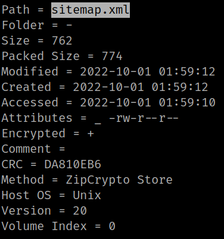
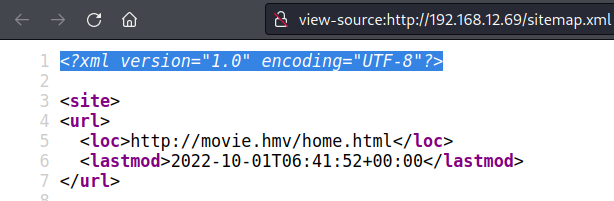
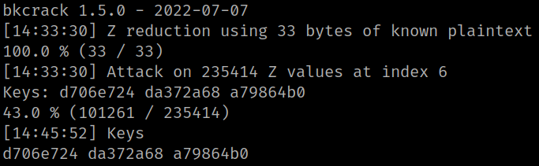
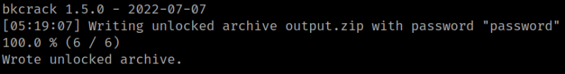
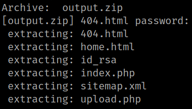

4.3 Decompress zip with "bkcrack"
A ZIP archive may contain many entries whose content can be compressed and/or encrypted. In particular, entries can be encrypted with a password-based symmetric encryption algorithm referred to as traditional PKWARE encryption, legacy encryption or ZipCrypto. This algorithm generates a pseudo-random stream of bytes (keystream) which is XORed to the entry's content (plaintext) to produce encrypted data (ciphertext). The generator's state, made of three 32-bits integers, is initialized using the password and then continuously updated with plaintext as encryption goes on. This encryption algorithm is vulnerable to known plaintext attacks as shown by Eli Biham and Paul C. Kocher in the research paper A known plaintext attack on the PKZIP stream cipher. Given ciphertext and 12 or more bytes of the corresponding plaintext, the internal state of the keystream generator can be recovered. This internal state is enough to decipher ciphertext entirely as well as other entries which were encrypted with the same password. It can also be used to bruteforce the password with a complexity of nl-6 where n is the size of the character set and l is the length of the password.
More info about bkcrack clicking here.
1. With “7z” you can see the zip file's content.
$ 7z l -slt mydata_archive.zip
Output:

There's a file called “sitemap.xml” on the victim's machine.
2. Navigate to http://192.168.12.69/sitemap.xml and take a look at the “Source code”>

3. Create a file called “site.xml” with the string "<?xml version="1.0" encoding="UTF-8"?>".
$ nano site.xml
3. Compress the file to zip.
$ zip site.xml.zip site.xml4. Download “bkcrack”.
$ wget https://github.com/kimci86/bkcrack/releases/download/v1.5.0/bkcrack-1.5.0-Linux.tar.gz
5. Decompress the file.
$ tar -xf bkcrack-1.5.0-Linux.tar.gz
6. Run the followings command.
$ ~/movie/bkcrack-1.5.0-Linux/./bkcrack -C mydata_archive.zip -c sitemap.xml -P site.xml.zip -p site.xml
Output:

$ ~/movie/bkcrack-1.5.0-Linux/./bkcrack -C mydata_archive.zip -k d706e724 da372a68 a79864b0 -U output.zip password
Output:

A file called “output.zip” has been created with password “password”.
7. Decompress “output.zip”.
$ unzip output.zip Output:

There's a file called “id_rsa” which it'll help you connect via SSH as user “tarantino”.